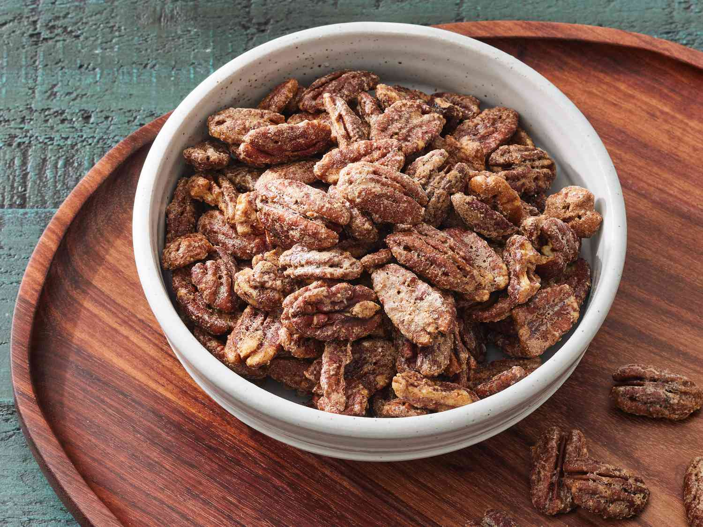

Home
Candied Pecans Recipe

Description
Candied pecans are easy to make at home with this simple recipe. They're the best combination of sweet and salty, with delicious crunch in every bite. Fill up small jars to give as holiday gifts or keep some for yourself to sprinkle over salads or serve to guests.
The Pecans are the key ingredient in this recipe, providing a rich, nutty flavor and satisfying crunch.
Ingredients
- Sugar: This recipe calls for white sugar, but you can use a blend of white and brown sugars if you like.
- Cinnamon: Ground cinnamon adds warmth and coziness that perfectly complements the nutty flavor of the pecans.
- Salt: A pinch of salt enhances the other flavors. You might be tempted to skip this ingredient, but don't!
- Egg white and water: One large egg white, beaten with a tablespoon of water, gives the sugar and cinnamon something to adhere to. Plus, it gives the finished candied pecans a gorgeous shine. Some home cooks like to use vanilla instead of water.
- Pecans: Of course, you'll need pecan halves. This recipe calls for one pound, but it's easy to adjust the recipe for any amount of pecans.
Steps
- Preheat the oven to 350°F (175°C).
- Line a baking sheet with parchment paper.
- In a large bowl, mix together the sugar, cinnamon, and salt.
- In a small bowl, whisk together the egg white and water.
- Add the pecans to the sugar mixture and stir until evenly coated.
- Spread the pecans on the prepared baking sheet in a single layer.
- Bake for 10-12 minutes, stirring once halfway through.
- Remove from oven and let cool completely before serving or storing.